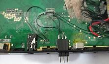
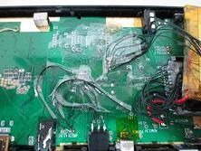
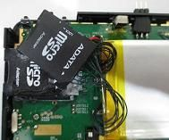
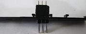
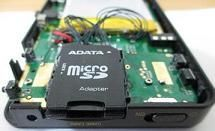
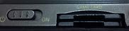

Steward
分享是一種喜悅、更是一種幸福
掌機 - Neo Geo X v370 - 焊接SD0、UART接頭
自從國外貼出一張NeoGeo X開機進入Dingux的畫面後，司徒就一直想把自己的NeoGeo X掌機改成Dingux系統，但是需要更改內部系統檔案，由於司徒的NeoGeo X掌機是v370版本，因此，原本的MicroSD已經改成Flash IC了，而官方韌體並沒有提供檔案管理程式，所以司徒只好把歪腦筋動到SD0上，而研究多天後，發現NeoGeo X掌機是使用君正JZ4770晶片，而該晶片具有多重開機的設定，但是，預設是從SD0/MMC開機，而根據國外高手洩漏，其實PCB板上面還是有保留SD0的焊點，如下圖

焊接OK線

這樣就有兩張SD卡可以使用

接著準備焊接UART線

UART的TX、RX、GND三條線
貼上膠帶防止焊點被拔掉(因為焊點相當脆弱)
接著尋找適合的位置
疊在一起最適合

兩張MicroSD卡槽

這樣更改的好處就是可以保留官方韌體，達到雙重開機的效果，之後司徒開發程式就可以使用SD0作為測試，因為使用USB更新測試程式會導致內部Flash的資料被刷掉，會有刷壞的風險，而有了這一個SD0做為媒介，司徒可以研究開發UBoot、Kernel、OS等程式，而且是基於JZ4770平台，所以也算是司徒的另一台嵌入式開發平台